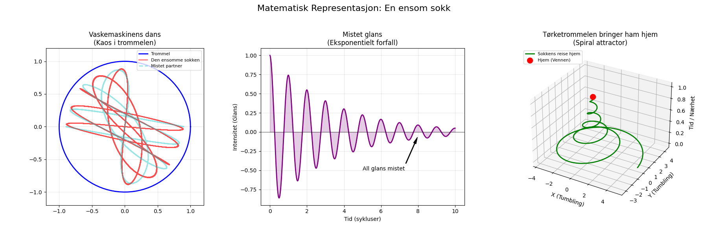

En ensom sokk i vaskemaskinens dans, mistet sin partner og all sin glans. Nå drømmer den om en ullen venn, og håper at tørketrommelen bringer ham hjem igjen.

import matplotlib.pyplot as plt
import numpy as np
# Definer output-path
output_path = "sokk_visualisering.png"
# Opprett figur og akser
fig = plt.figure(figsize=(18, 6))
fig.suptitle("Matematisk Representasjon: En ensom sokk", fontsize=16)
# --- Plot 1: Vaskemaskinens dans (Faseportrett) ---
ax1 = fig.add_subplot(131)
ax1.set_title("Vaskemaskinens dans\n(Kaos i trommelen)")
# Tegner trommelen (en sirkel)
theta_cirkel = np.linspace(0, 2*np.pi, 100)
ax1.plot(np.cos(theta_cirkel), np.sin(theta_cirkel), 'b-', linewidth=2, label='Trommel')
# Beregner sokkens kaotiske bevegelse (Lissajous-lignende kurve)
t = np.linspace(0, 20*np.pi, 2000)
x_sokk = np.sin(t) * np.cos(11*t) * 0.9
y_sokk = np.cos(t) * np.sin(9*t) * 0.9
# Tegner den ensomme sokken (rød linje)
ax1.plot(x_sokk, y_sokk, 'r-', alpha=0.7, linewidth=1.5, label='Den ensomme sokken')
# Legger til en "ghost" av partneren som stopper brått (mistet partner)
t_partner = np.linspace(0, 5*np.pi, 500)
x_partner = np.sin(t_partner) * np.cos(8*t_partner) * 0.9
y_partner = np.cos(t_partner) * np.sin(6*t_partner) * 0.9
ax1.plot(x_partner, y_partner, 'c--', alpha=0.4, linewidth=2, label='Mistet partner')
ax1.set_xlim(-1.2, 1.2)
ax1.set_ylim(-1.2, 1.2)
ax1.set_aspect('equal')
ax1.legend(loc='upper right', fontsize=8)
ax1.grid(True, alpha=0.3)
# --- Plot 2: Mistet glans (Dempet oscillasjon) ---
ax2 = fig.add_subplot(132)
ax2.set_title("Mistet glans\n(Eksponentielt forfall)")
t_decay = np.linspace(0, 10, 1000)
# Dempet sinusfunksjon som representerer glans som fades
glans = np.exp(-0.3 * t_decay) * np.cos(2 * np.pi * t_decay)
ax2.plot(t_decay, glans, color='purple', linewidth=2)
ax2.fill_between(t_decay, glans, alpha=0.2, color='purple')
ax2.axhline(0, color='black', linewidth=0.5)
# Markerer punktet hvor "all glans" er borte
ax2.annotate('All glans mistet', xy=(8, -0.05), xytext=(5, -0.5),
arrowprops=dict(facecolor='black', shrink=0.05, width=1, headwidth=5))
ax2.set_xlabel("Tid (sykluser)")
ax2.set_ylabel("Intensitet (Glans)")
ax2.grid(True, alpha=0.3)
# --- Plot 3: Tørketrommelen bringer ham hjem (Spiral ATTRAKTOR) ---
ax3 = fig.add_subplot(133, projection='3d')
ax3.set_title("Tørketrommelen bringer ham hjem\n(Spiral attractor)")
# Parametere for en spiral som konvergerer mot et punkt (hjem)
t_spiral = np.linspace(0, 10*np.pi, 1000)
z_spiral = t_spiral / (10*np.pi) # Høyde
r_spiral = 5 * np.exp(-0.1 * t_spiral) # Radius minker (trekkes mot sentrum)
x_spiral = r_spiral * np.cos(t_spiral)
y_spiral = r_spiral * np.sin(t_spiral)
# Tegner spiralens bane
ax3.plot(x_spiral, y_spiral, z_spiral, 'g-', linewidth=2, label='Sokkens reise hjem')
# Sluttpunktet (Hjem)
ax3.scatter([0], [0], [1], color='red', s=100, label='Hjem (Vennen)')
ax3.set_xlabel('X (Tumbling)')
ax3.set_ylabel('Y (Tumbling)')
ax3.set_zlabel('Tid / Nærhet')
ax3.legend(loc='upper left', fontsize=8)
# Juster layout og lagre
plt.tight_layout(rect=[0, 0.03, 1, 0.95])
plt.savefig(output_path)execution_ok=True fallback_used=False image_ok=True